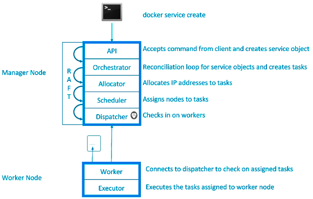
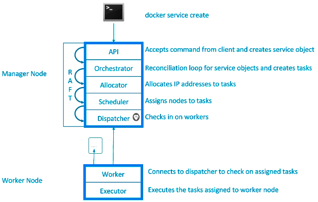

Swarm
Containers Everywhere = New Problems
How do we automate container lifecycle?
How can we easily scale out/in/up/down?
How can we ensure our containers are recreated if they fail?
How can we replace containers without downtime (blue/green deploy)?
How can we control/track where containers get started?
How can we create cross-node virtual networks?
How can we ensure only trusted servers run our containers?
How can we store secrets, keys, passwords and get them to the right container (and only that container)?
Swarm Mode: Built-In Orchestration
Swarm Mode is a clustering solution built inside Docker
Not related to Swarm “classic” for pre-1.12 versions
Added in 1.12 (Summer 2016) via SwarmKit toolkit
Enhanced in 1.13 (Jan 2017) via Stacks and Secrets
Not enabled by default, new commands once enabled
docker swarm
docker node
docker service
docker stack
docker secret
 

Swarm Services
docker swarm init
Lots of PKI and security automation
Root Signing Certificate create for our Swarm
Certificate is issued for first Manager node
Join tokens are created
Raft database created to store root CA, configs and secrets
Encrypted by default on disk (1.13+)
No need for another key/value system to hold orchestration/secrets
Replicates logs amongst Managers via mutual TLS in “contrl plane”
Overlay Multi-Host Networking
Just choose –driver overlay when creating network
FOr container-to-container traffic inside a single Swarm
Optional IPSec (AES) encryption on netowrk creation
Each service can be connected to multiple networks
(e.g. fornt-end, back-end)
docker network create –driver overlay mydrupal
docker service create –name psql –network mydrupal -e POSTGRES_PASSWORD=mypass postgres
docker service create –name dripal –network mydrupal -p 80:80 drupal
Routing Mesh
Routes ingress (incoming) packets for a Service to proper Task
Spans all nodes in Swarm
Uses IPVS from Linux Kernal
Load balances Swarm Services accross their Tasks
Two ways this works
COntainer-to-container in a Overlay netrwokr (uses VIP)
External traffic incoming to published ports (all nodes listen)


docker service create –name elasticsearch –replicas 3 -p 9200:9200 elasticsearch:2
This is a stateless load balancer
This LB is at OSI layer 3 (TCP) not layer 4 (DNS)
Both limitations can be overcome with:
Nginx or HAProxy LB proxy or:
Docker enterprise Edition which comes with built-in L4 web proxy
Swarm Stacks
In 1.13 Docker adds a new layer of abstraction to Swarm called Stacks
Stacks accept Compose files as their declarative definition for services, networks, and volumes
We use docker stack deploy rather than docker service create
Stack manages all those objects for us, including overlay network per stack. Adds stack name to start of their name
New deploy: key in Compose file. Cant do build:
Compose now ignores deploy:, Swarm ignores build:
docker-compose cli not needed on Swarm server
docker stack deploy -c example-voting-app-stack.yml voteapp
docker stack serices voteapp
docker stack ps voteapp
Swarm Secrets
Secrets Storage
Easiest “Secure” solution for storing secrets in Swarm
What is a Secret?
Usernames and passwords
TLS certificates and keys
SSH keys
Any data you would prefer not being on front page of news
Supports generic strings or binary content up to 500Kb in size
Doesnt require apps to be rewritten
As of Docker 1.13.0 Swarm Raft DB is encrypted on disk
Only stored on disk on Manager nodes
Default is Managers and Workers “control plan” is TLS + Mutual Auth
Secrets are firt stored in Swarm, then assigned to a Service(s)
Only containers in assigned Service(s) can see them
They look like files in container but are actuallin in-memory fs
/run/secrets/secret_name or /run/secrets/secret_alias
Local docker-compose can use file-based secrets, but not secure
Secrets with Services
docker secret create psql_user psql_user.txt
echo “myDBPassword” | docker secret create psql_pass -
docker secret ls
docker secret inspect psql_user
docker service create –name psql –secret psql_user –secret psql_pass -e POSTGRES_PASSWORD_FILE=/run/secrets/psql_pass -e POSTGRES_USER_FILE=/run/secrets/psql_user postgres
docker service update –secret-rm
Secrets with Stacks
docker service create –name search –replicas 3 -p 9200:9200 elasticsearch:2
docker stack deploy -c docker-compoes.yml mydb
Swarm Lifecycle
docker-compose exec psql cat /run/secrets/psql_user
Full App Lifecycle with Compose
Single set of Compose files for:
Local docker-compose up development environemnt
Remote docker-compose up CI environment
Remote docker stack deploy production environment
Note: docker-compose -f a.yml -f b.yml config mostly works
Note: Compose extends: doesnt work yet in Stacks
Service Updates
Provides rolling replacement of tasks/containers in a service
Limits downtime (be careful with “prevents” downtime)
Will replace containers for most changes
Has many, many cli options to control the update
Create options will usally change, adding -add or -rm to them
Also has scale & rollback subcommand for quicker access
docker service scale web=4 and docker service rollback web
A stack deploy, when pre-existing, will issue service updates
Swarm Update Examples
Just update the image used to a newer version
docker service update –image myapp:1.2.1 <servicename>
Adding an environment variable and remove a port
docker service update –env-add NODE_ENV=production –publish-rm 8080
Change number of replicas of two services
docker service scale web=8 api=6
Swarm Updates in Stack FIles
Same command, just edit the YAML file, then
docker stack deploy -c file.yml <stackname>
Healthchecks
HEALTHCHECK was added in 1.12
Supported in Dckerfile, Compose YAML, docker run, and Swarm Services
Docker engine will exec’s the command in the container
e.g curl localhost
it expects exit 0 (OK) or exit 1 (Error)
Three container states: starting, healthy, unhealthy
Much better than “is binary still running?”
Not an external monitoring replacement
Healthcheck status shows up in docker container ls
Check last 5 healthchecks with docker container inspect
Docker run does nothing with healthchecks
Services will replace takss if they fail healthcheck
Service updates wait for them before continuing
Healthcheck DOcker Run Example
docker run \
--health-cmd="curl -f localhost:9200/_cluster/health || False" \
--health-interval=5s \
--health-retries=3 \
--health-timeout=2s \
--health-start-period=15s \
elasticsearch:2
Healthcheck Dockerfile Examples
Options for healthcheck command
–interval=DURATION (default: 30s)
–timeout=DURATION (default: 30s)
–start-period=DURATION (default: 0s) (17.09+)
–retries=N (default:3)
Basic command using default options
HEALTHCHECK curl -f http://localhost/ || false
Custom options with the command
HEALTHCHECK –timeout=2s –interval=3s –retries=3 CMD curl -f http://localhost/ || exit 1
Healthcheck in Nginx Dockerfile
Static website running in Nginx, just test default URL
FROM nginx:1.13
HEALTHCHECK --interval=30s --timeout=3s \
CMD curl -f http://localhost/ || exit 1
Healthcheck in PHP Nginx Dockerfile
PHP-FPM running behind Nginx, test the Nginx and FPM status URLs
FROM your-nginx-php-fpm-combo-image
# dont do this if php-fpm is another container
# must enable php-fpm ping/status in pool.ini
# must forward /ping and /status urls from ngix to php-fpom
HEALTHCHECK --interval=5s --timeout=3s \
CMD curl -f http://localhost/ping || exit 1
Healthcheck in postgres Dockerfile
Use a PostgtreSQL utility to test for ready state
FROM postgres
# Specify real user with -U to prevent errors in log
HEALTHCHECK --interval=5s --timeout=3s \
CMD pg_isready -U postgres || exit 1